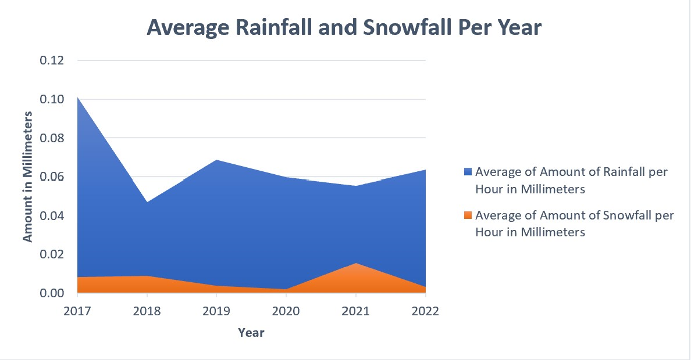
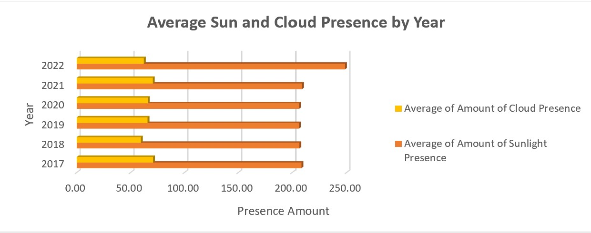

Averages & Energy Consumptions
Excel Data Analysis
Objectives & Questions that will drive the analysis:
• Which month has the highest average for energy consumption?
• What years had the lowest rainfall and snowfall averages?
• What is the average amount of cloud coverage over the years 2017 to 2022?
Cleaning & Preparation:
The raw data included detailed information pertaining to weather conditions and energy consumption in hourly, monthly, and yearly intervals. The untransformed data can be found in this LINK here.
The following actions were performed to prepare the data:
• Eliminated duplicate values and columns that did not correspond to the data along with empty cells
• Formatted Celsius values to Fahrenheit via custom lookup formula
• Changed values for the sun presence column for better clarity
• Adjusted numerical values to better suit the analysis
Data Analysis:
To answer our target questions, analysis was done using Excel pivot tables, slicer filters, and visualizations.
• Q1: Which month has the highest average for energy consumption?
• Q2: What years had the lowest rainfall and snowfall averages?
• Q3: What is the average amount of cloud coverage over the years 2017 to 2022?
Visualization:
Finally, we created an easy-to-understand overview of our analysis via the dashboard below. On it, different filters can be selected to show the specific answers to our objective questions. Access to the dashboard can be found here by clicking this LINK here.
Conclusion:
After using Excel with our personal customization for formulas and charts, we were able to create a dashboard that answer our objective questions. For instance, the month with the highest average energy consumption rate is June. Secondly, the year with the lowest average of rainfall was 2018 and the year with the lowest snowfall average was 2020. Lastly, we were able to determine the average amount of cloud coverage from 2017 to 2022 was 54.8% based on the averages found and displayed in our chart. With these results, we can determine that since the highest average of energy consumption was in June and that with the amount of cloud coverage (which is only a little over half), the excess amounts of sunlight and hotter temperatures could be the reason as to why energy consumption levels are so high. In addition to this, looking at the average amount of snowfall over the years, we can see that for the most part the volume of snowfall has been almost in decline from the previous years, apart from 2021.
It could then be recommended that more manufacturers and companies be required to produce more energy efficient appliances and homes, especially air conditioners, to reduce energy consumption. Lower energy levels could also be accomplished by placing more solar and nature friendly options for corporations and consumers alike. Also, it would be a positive global impact if efforts towards climate change were implemented to reduce carbon emissions. Since we can see that in the year 2022 had the highest average of solar radiation, we can only assume that if we do not take measures to correct our consumption course, the planet will only get hotter and the energy consumption levels will rise.